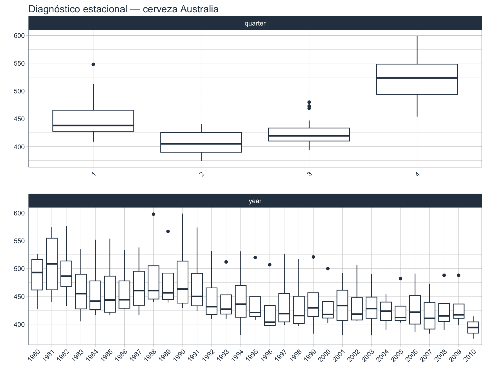
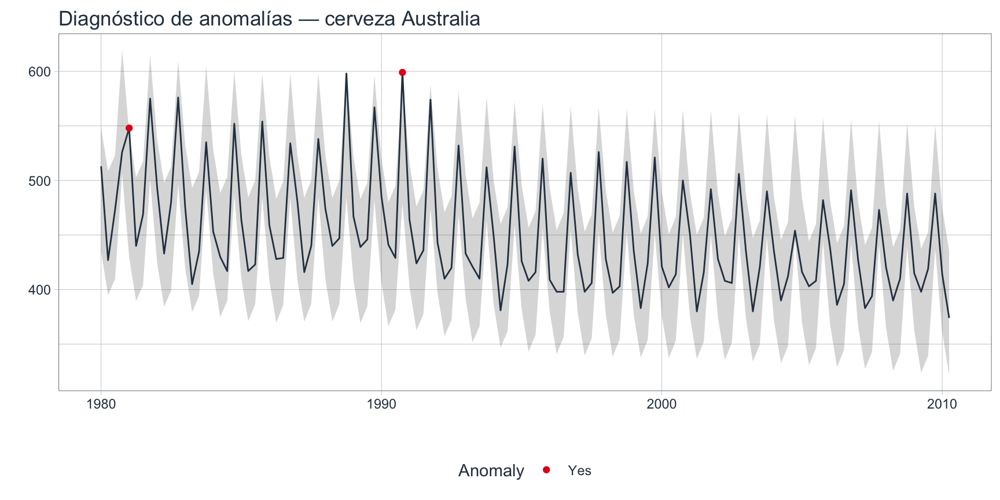

3 Sección 2 · EDA
Esta parte asume que ya leíste la sección 1 de la Unidad 1. Si no, volvé y mirá al menos las secciones “Naturaleza, componentes y descomposición” y “Componentes formales de una serie”, porque vamos a usar el vocabulario de tendencia, estacionalidad, ciclo e irregularidad, y la distinción entre modelos aditivos y multiplicativos, sin volver a definirlos.
4 Objetivo de esta sección
Hasta ahora aprendimos a mirar una serie y a identificar sus componentes (tendencia, estacionalidad, ciclo, irregularidad) y familiarizarno con el entorno de trabajo. En esta sección vamos a prepararla para que un modelo pueda trabajar con ella. Vamos a aprender a realizar un análisis exploratorio más profundo.
5 Caso de estudio: producción de cerveza en Australia
Usaremos la serie trimestral de producción de cerveza en Australia entre 1956 Q1 y 2010 Q2 (218 observaciones). Es la versión acotada a los años más recientes de la serie Beer que viene con el paquete fpp3, y un clásico de la literatura de pronóstico. La vamos a importar desde un .csv con dos columnas: Quarter y Beer (producción en megalitros).
.csv
Para que el código de esta guía corra sin modificar nada, guardá el archivo beer.csv en la misma carpeta que este .qmd. Si lo guardás en otro directorio, ajustá la ruta en el chunk de lectura.
6 Lectura e inspección inicial
6.1 Importación cruda
# A tibble: 6 × 2
Quarter Beer
<chr> <dbl>
1 1980 Q1 513
2 1980 Q2 427
3 1980 Q3 473
4 1980 Q4 526
5 1981 Q1 548
6 1981 Q2 440La columna Quarter viene como texto con formato "1956 Q1". Antes de poder tratarla como serie de tiempo, tenemos que convertirla a un formato date.
6.2 Parseo de la fecha trimestral
Código
tibble [122 × 2] (S3: tbl_df/tbl/data.frame)
$ fecha : Date[1:122], format: "1980-01-01" "1980-04-01" ...
$ cerveza: num [1:122] 513 427 473 526 548 440 469 575 493 433 ...yq()?
yq() es un parser de lubridate específico para fechas económicas trimestrales y devuelve un objeto Date real. El resultado es el primer día del trimestre (p. ej. 1990-01-01 para 1990 Q1).
7 Diagnóstico de la calidad
7.1 Verificación de la grilla temporal
Una situación frecuente en series económicas es que falten datos. Vamos a chequearlo explícitamente.
# A tibble: 0 × 2
# ℹ 2 variables: fecha <date>, cerveza <dbl>En este dataset la grilla está completa: 122 trimestres observados, 122 trimestres esperados, 0 fechas faltantes. Esto es ideal — muchos datasets reales no tienen tanta suerte.
- No hacer nada y aceptar que el método/modelo que vamos a usar sea robusto a
NA. Pocos lo son. - Imputación por arrastre (
tidyr::fill()): si el faltante es muy puntual, repetir el último valor conocido. Útil para indicadores económicos que cambian lento. - Imputación por interpolación lineal (
zoo::na.approx()): suaviza el salto. - Imputación por estacionalidad: reemplazar el valor faltante por el del mismo trimestre del año anterior. Muy razonable para series con estacionalidad marcada.
- Imputación por modelo (regresión, k-neighbours, etc.): más costoso pero más preciso.
En esta unidad no vamos a profundizar en imputación, pero queda la idea: un faltante no se “ignora”, se decide cómo tratar (Hyndman & Athanasopoulos, 2021, sección 3.4).
7.2 Resumen numérico de la serie
timetk trae una función muy útil para un resumen ejecutivo de la calidad de una serie: tk_summary_diagnostics(). Devuelve, en un solo tibble, todo lo que típicamente queremos saber antes de empezar a modelar.
# A tibble: 1 × 12
n.obs start end units scale tzone diff.minimum diff.q1 diff.median
<int> <date> <date> <chr> <chr> <chr> <dbl> <dbl> <dbl>
1 122 1980-01-01 2010-04-01 days quar… UTC 7776000 7862400 7862400
# ℹ 3 more variables: diff.mean <dbl>, diff.q3 <dbl>, diff.maximum <dbl>UTC → zona horaria por defecto (no relevante acá porque son fechas, no datetime con hora).
diff. → Están medidos en segundos. diff.minimum = 7776000 segundos = 90 días (Trimestre)
7.3 Visualización inicial indispensable
Código
- Tendencia decreciente sostenida.
- Estacionalidad trimestral marcada pero aparentemente no-multiplicativa: los “dientes” tienen aplitud estable a medida que la serie decrece (Varianza constante).
- No hay huecos visuales ni picos aislados que griten “outlier” desde lejos.
El gráfico anterior no prueba nada, pero orienta todo lo que viene. La estacionalidad aditiva y la varianza constante son señales de que vamos a necesitar.
7.4 Inspección visual: descomposición estacional
Código
En conjunto, la descomposición muestra que la producción trimestral de cerveza en Australia está dominada por un patrón estacional muy fuerte y estable, acompañado por una tendencia descendente de largo plazo, mientras que la variabilidad residual es relativamente pequeña.
.frequency y .trend
| Periodicidad | .frequency |
.trend recomendado |
|---|---|---|
| Mensual | 12 | 24 o 36 +1 |
| Trimestral | 4 | 8 o 16 +1 |
| Semanal | 52 | 104 +1 |
| Diaria (patrón semanal) | 7 | 14 o 28 +1 |
Regla práctica:
.frequencycorresponde a la cantidad de observaciones que completan un ciclo estacional..trendindica el tamaño de la ventana utilizada para estimar la tendencia. Cuanto mayor sea este valor, más suave será la tendencia estimada.
STL (Seasonal and Trend decomposition using Loess) es un método que descompone una serie temporal en tres componentes principales:
\[Observed = Trend+Seasson+Remainder\]
La principal ventaja de STL es que estima cada componente de forma flexible mediante suavizado local (LOESS), por lo que resulta adecuado para series con patrones complejos.
Es una técnica de suavizado local que ajusta pequeñas regresiones sobre grupos de observaciones cercanas, en lugar de ajustar una única función para toda la serie. Es decir:
- Para estimar el valor de un punto, LOESS utiliza únicamente las observaciones cercanas.
- Repite este procedimiento para cada punto de la serie.
- Al unir todas esas estimaciones se obtiene una curva suave que sigue la tendencia de los datos.
Por eso, en la descomposición STL, la tendencia no se representa mediante una recta o un polinomio, sino mediante una curva que puede adaptarse a cambios graduales en el comportamiento de la serie.
- Hyndman, R. J., & Athanasopoulos, G. (2021). Forecasting: Principles and Practice (3rd ed.). Capítulo 3: Time Series Decomposition.
- Cleveland, R. B., Cleveland, W. S., McRae, J. E., & Terpenning, I. (1990). STL: A Seasonal-Trend Decomposition Procedure Based on Loess. Journal of Official Statistics, 6(1), 3–73.
7.5 Box plot
timetk también nos da una vista rápida de la estacionalidad por subperíodo, ideal para detectar trimestres que se desvían del patrón estacional típico, mediante diagramas de caja.
Código
Código

Los paneles muestran la distribución de la serie dentro de cada año (panel year) y dentro de cada trimestre (panel quarter). Si todos los años tienen la misma forma, no hay años “raros”; si todos los trimestres tienen la misma forma, no hay trimestres “raros”.
8 Anomalías
8.1 ¿Outlier o anomalía?
- Un outlier clásico (en estadística transversal) es un valor extremo respecto a la distribución de la variable.
- En series de tiempo preferimos hablar de anomalías: observaciones que se apartan del patrón esperado de la serie (tendencia + estacionalidad), no sólo de la media global.
Un valor “alto” en Q4 puede ser perfectamente normal si la serie tiene estacionalidad fuerte. Y un valor “moderado” puede ser una anomalía si cae en un Q2 donde la serie suele estar baja.
8.2 Diagnóstico automático de anomalías
Analiza únicamente el componente residual, ya que las anomalías son observaciones que no pueden explicarse ni por la tendencia ni por la estacionalidad. Considera como anomalía aquellos datos que caen por debajo del cuarti 1 (Q1) o por encima del cuartil 3 (Q3) en una magnitud equivalente a tres veces el intervalo intercuartílico.
Código

El gráfico marca con puntos rojos los trimestres que la función clasifica como anómalos. La tabla de detalle se obtiene con:
Código
# A tibble: 2 × 11
fecha observed season trend remainder seasadj remainder_l1 remainder_l2
<date> <dbl> <dbl> <dbl> <dbl> <dbl> <dbl> <dbl>
1 1990-10-01 599 71.9 464. 63.2 527. -57.1 56.4
2 1981-01-01 548 -3.60 490. 61.5 552. -57.1 56.4
# ℹ 3 more variables: anomaly <chr>, recomposed_l1 <dbl>, recomposed_l2 <dbl>En series temporales, casi nunca se borra un outlier: la observación es real y forma parte de la historia. Lo que se hace es:
- Marcarlo para diagnóstico (como acabamos de hacer).
- Considerarlo en el modelo (los modelos robustos lo manejan bien; los modelos clásicos lo absorben como parte del ruido). Identificarlo para el modelo como una variable dicotómica cuando el algoritmo lo permita.
- Explicarlo si es posible (huelgas, crisis, cambios regulatorios, errores de carga).
En esta serie australiana probablemente no aparezcan outliers clásicos que justifiquen intervención: la variación es estructural (estacional + tendencia), no espuria.
9 Transformaciones
Una serie con varianza creciente o estacionalidad multiplicativa no se modela bien con herramientas que asumen varianza constante. Hay algunas transformaciones que estabilizan la varianza y/o remueven tendencia:
| Transformación | Cuándo se usa | Efecto principal |
|---|---|---|
| Logarítimca: \(log(Y_t)\) | Varianza crece con el nivel; estacionalidad multiplicativa | Estabiliza varianza, convierte multiplicativo en aditivo |
| Diferenciación: \(\Delta Y_t\) o \(\Delta log(Y_t)\) | Serie con tendencia o raíz unitaria | Remueve tendencia, reduce estacionariedad |
La diferenciación la vamos a tratar en profundidad en la siguiente sección, cuando hablemos de estacionariedad y ramdom walk. Acá la dejamos presentada.
9.1 Transformación logarítmica
Código
En este caso la transformación logaritimica no produce cambios porque no era necesaria inicialmente (resolver la actividad sugerida y ver los cambios).
Acá concluye el EDA de la serie australiana. Esta es un caso de manual: grilla completa, sin anomalías importantes, con estacionalidad aditiva marcada y tendencia decreciente. No require transformaciones y está lista para particionar y modelar.
10 Partición train / test con timetk
Este es el último paso antes de modelar y, curiosamente, el que más se hace mal cuando se empieza.
En series de tiempo nunca se hace una partición aleatoria. La partición respeta el orden temporal: el entrenamiento es todo lo anterior al test, y el test es una ventana ubicada al final de la serie.
timetk::time_series_split() hace exactamente esto:
Código
<Analysis/Assess/Total>
<98/24/122>El objeto splits contiene un splits (índices de train) y un assessment (índices de test). Para usarlos como tibbles:
10.1 Visualización de la partición
Código
El train queda azul y el test queda rojo. La frontera entre ambos es el corte temporal. Lo que se hace después con esto es:
- Ajustar el modelo sólo sobre
train_tbl. - Pronosticar para los próximos
n_testperíodos. - Comparar el pronóstico con
test_tbl.
No hay una regla única, pero como guía:
- Series anuales: 2 a 4 años de test.
- Series trimestrales: 2 a 4 años (8 a 16 trimestres).
- Series mensuales: 18 a 24 meses.
- Series diarias: algunos meses.
- Simplemente el 20%
La idea es que el test cubra al menos un ciclo estacional completo y, si es posible, un ciclo económico. Acá, con datos trimestrales, 8 trimestres (2 años) alcanzaría para cubrir un ciclo estacional completo.
10.2 Validación temporal con rolling origin (opcional)
Cuando queremos una evaluación más fina — la partición simple se reemplaza por una validación cruzada con ventana móvil (rolling-origin cross-validation) aunque no la veremos en esta unidad.
11 Resumen de lo visto
- Importar y parsear fechas trimestrales con
yq(). - Verificar la integridad de la grilla temporal (no sólo
NAen valores, también fechas faltantes). - Diagnosticar la calidad de la serie con
tk_summary_diagnostics(). - Visualizar la serie con
plot_time_series()y descomponer su estacionalidad conplot_seasonal_diagnostics(). - Detectar anomalías con
plot_anomaly_diagnostics(), y outliers con reglas de IQR y z-score móvil. - Aplicar transformaciones que estabilizan varianza:
log. - Particionar la serie en train / test con
time_series_split(), respetando el orden temporal, y visualizar el corte conplot_time_series_cv_plan().
12 Actividad Sugerida
El archivo preciocord.csv contiene la serie mensual del precio nominal promedio del cordero patagónico (PPCord), expresado en pesos por kilogramo/gancho. La información es relevada por los Centros Regionales Patagonia Norte y Patagonia Sur del INTA y representa el precio percibido directamente por los productores al momento de la faena.
Utilizando las funciones del paquete timetk, realice las siguientes actividades:
Importe el archivo
preciocord.csv, convierta la variable de fecha al formato adecuado y describa el lapso de tiempo que dispone. Verifique la ausencia deNA.Visualice la serie temporal en su escala original e identifique las principales características observadas (tendencia, variabilidad y posibles cambios en el comportamiento de la serie).
Genere una nueva variable correspondiente al logaritmo natural del precio y explique brevemente por qué esta transformación puede ser adecuado para el caso en estudio.
Realice un análisis exploratorio completo (EDA) utilizando la serie transformada. Incluya, como mínimo:
- gráfico de la serie temporal;
- gráfico estacional;
- diagnóstico STL;
- diagnóstico de anomalías.
Particione la serie en un conjunto de entrenamiento y otro de prueba, reservando los últimos 24 meses para validación. Verifique gráficamente que la partición sea correcta.